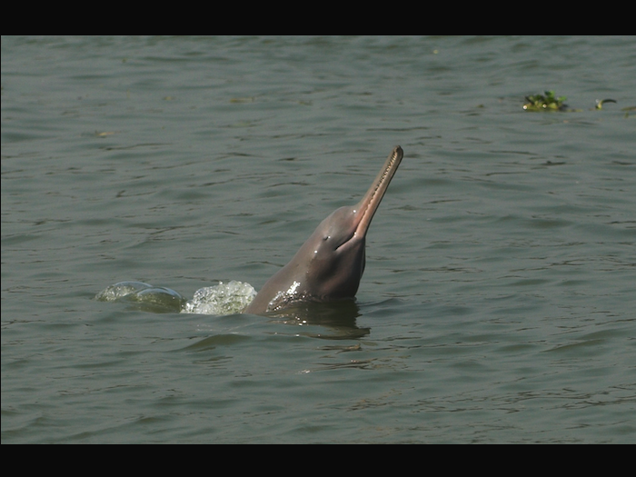

Learn
Explore the dolphin’s life, the Ganges basin and the pressures affecting both.
About the dolphinA river worth protecting
The Ganges river dolphin is one of the world’s rare freshwater dolphins. Its future is bound to the health of the river it calls home.
A remarkable river mammal
The Gangetic dolphin navigates the river’s silty waters using sound. It is one of only three freshwater dolphin species left following the extinction of the Yangtze dolphin. The original site reports that its population fell from about 4,500 in 1982 to an estimated 1,800. Pollution, dams, fishing nets and the growing demand for river water all put pressure on its habitat.
Understand the challengesIndia’s National Aquatic Animal
Learn about the speciesThe project
Luke Coleman’s project uses a children’s story to help young readers connect with the dolphin and the river ecosystem.
Explore the dolphin’s life, the Ganges basin and the pressures affecting both.
About the dolphinMeet Krishna and Aadesh, the characters at the heart of Luke’s children’s book.
Discover the storyFind out about the project’s fundraising and ways to offer support.
Support the missionIn pictures
